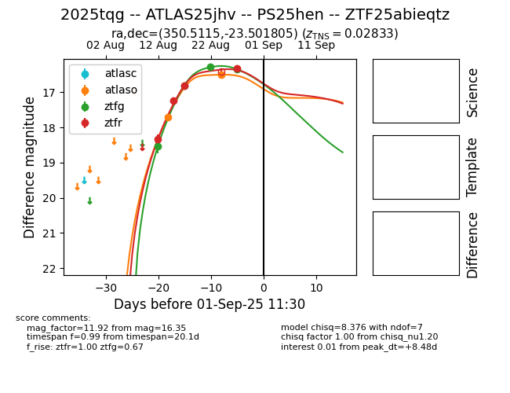

Target 2025tqg at 2025-08-28 04:30, see:
FINK: fink-portal.org/ZTF25abieqtz
Lasair: lasair-ztf.lsst.ac.uk/objects/ZTF25abieqtz
ALeRCE: alerce.online/object/ZTF25abieqtz
TNS: wis-tns.org/object/2025tqg
YSE: ziggy.ucolick.org/yse/transient_detail/2025tqg
alt names
ZTF25abieqtz (ztf,fink)
2025tqg (tns,yse)
ATLAS25jhv (atlas)
coordinates:
equatorial (ra, dec) = (350.5115,-23.50181)
galactic (l, b) = (38.1499,-69.50404)
photometry
last atlaso=16.50, ztfg=16.35, ztfr=16.82
2 atlaso, 4 ztfg, 3 ztfr detections
